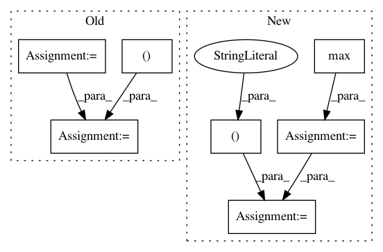

d8a075668b6e9cdf4c08f6c7285e5c7d2fbf5332,torch_geometric/graph/geometry.py,,edges_from_faces,#Any#,38
Before Change
return ValueError()
// Append undirected edges.
edges = torch.cat((edges, edges.index_select(1, torch.LongTensor([1, 0]))))
// Sort the adjacencies row-wise.
edges = edges.t()
sorted, indices = torch.sort(edges[0], 0)
edges = torch.cat((sorted, edges[1][indices])).view(2, -1)
return edges
After Change
def edges_from_faces(faces):
// Get directed edges.
edges = torch.cat((faces[:, 0:2], faces[:, 1:3], faces[:, 0:3:2]))
n = faces.max() + 1
// Build directed adjacency matrix.
adj = torch.sparse.FloatTensor(edges.t(),
torch.ones(edges.size(0)),
torch.Size([n, n]))
// Convert to undirected adjacency matrix.
adj = adj + adj.t()
// Remove duplicate indices.
// NOTE: This doesn"t work if transpose(...) is removed.
adj = adj.transpose(0, 1).coalesce()
In pattern: SUPERPATTERN
Frequency: 3
Non-data size: 7
Instances
Project Name: rusty1s/pytorch_geometric
Commit Name: d8a075668b6e9cdf4c08f6c7285e5c7d2fbf5332
Time: 2017-10-17
Author: matthias.fey@tu-dortmund.de
File Name: torch_geometric/graph/geometry.py
Class Name:
Method Name: edges_from_faces
Project Name: rtavenar/tslearn
Commit Name: c68ec2e70731f601f630eb1816c51d7ee4ef0853
Time: 2018-08-10
Author: guillaume.androz@gmail.com
File Name: tslearn/preprocessing.py
Class Name: TimeSeriesScalerMinMax
Method Name: fit_transform
Project Name: scipy/scipy
Commit Name: ef7707947b85d141e955e844ec1800df9eddb5c2
Time: 2018-12-26
Author: ilhanpolat@gmail.com
File Name: scipy/linalg/blas.py
Class Name:
Method Name: find_best_blas_type